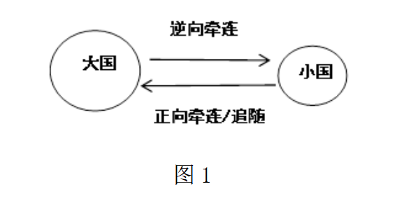
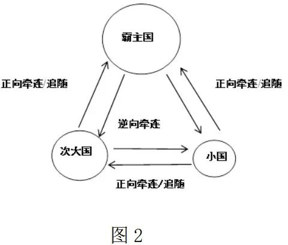
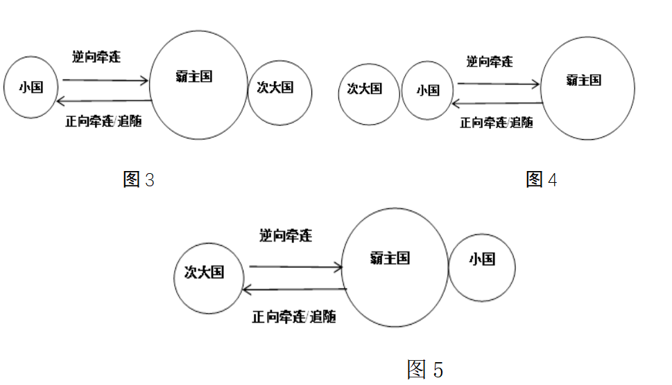
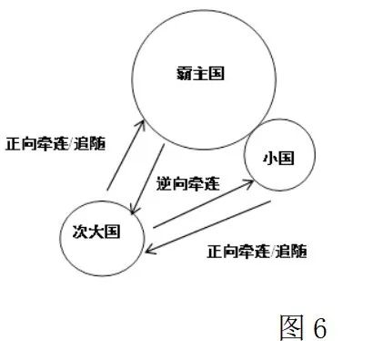
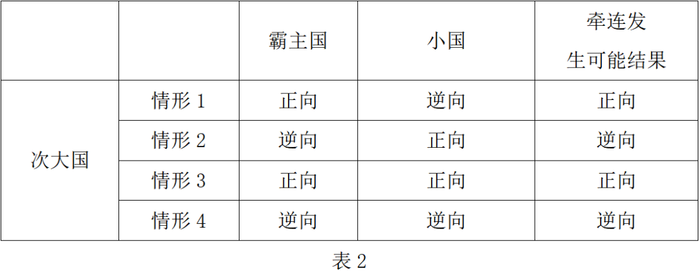
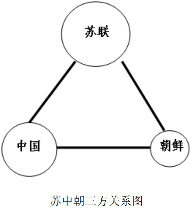
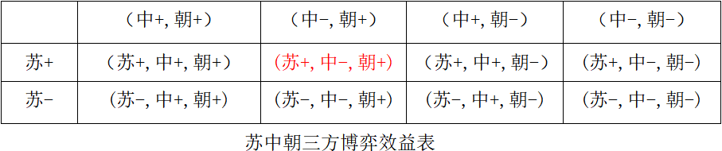

收录于合集

沈文科：朝鲜战争前中国的无奈选择
——基于同盟牵连理论的解释 **
**
作者： 沈文科，陆军指挥学院战略战役系讲师。
来源： 《战略决策研究》2021年第5期
摘要
国际政治中，小国影响大国的手段方式很多，同盟中的牵连是其中一种。朝鲜战争爆发前后，中国自身所面临的国际局面受到朝鲜半岛局部形势的影响，属于国际政治中小国牵连大国的典型案例。本文针对既然中国不愿看到朝鲜战争爆发，为什么中国又难以置身事外而牵连其中这一问题，在经典同盟理论分析基础上，通过模型分析法提出四大影响因素：美苏权力大格局、中国在苏中朝三方同盟中的权力地位、中朝的地缘关系以及同盟管理失败。最后，本文对全文观点做了总结，并探讨了研究中存在几点不足以及对当前中朝关系的看法。
1950年朝鲜战争爆发后，中国周边环境陡然恶化，美国出兵朝鲜将战火烧到鸭绿江，同时把第七舰队派往台湾海峡，对中国的国家安全造成了巨大威胁。中国领导人果敢出兵朝鲜，挫败了美国的战争目标，稳定了朝鲜半岛的现状，成功维护了中国的安全利益，为中国的和平发展创造了稳定局面，也提高了中国的国际地位和作用。虽然中国出兵朝鲜的后果是成功的、积极的，但这并不能改变一个历史事实——中国在最初并不希望发生朝鲜战争，朝鲜战争爆发先于台湾问题解决，显然出乎中国的预料。朝鲜战争爆发前，中国主要精力在于恢复国民经济发展。受苏联和朝鲜的影响，尽管朝鲜战争爆发后毛泽东主席关于出兵的态度发生过几次变化，但在中国未完成统一之前，毛泽东主席一直是不愿意看到朝鲜爆发战争。中国面对既成事实，虽然无奈，但出于多方面考虑，毅然决然主动选择出兵。 根据同盟理论，中国参加朝鲜战争，是比较典型的一个同盟牵连案例，因此本文试图讨论的核心问题是：既然中国不愿看到朝鲜战争爆发，为什么中国又难以置身事外而牵连其中。
当前对朝鲜战争的研究主要集中于中国在战争爆发后的出兵决策，中国在抗美援朝五次战役过程里的决策、宣传，朝鲜战争停战谈判以及中国抗美援朝的后果和影响等。在冷战国际史研究中， 针对中国出兵决策的原因分析，无论是“责任说分工”“革命激情说”“维护自身安全说”等观点，已经或多或少涉及到对牵连的分析，但主要从档案角度上对战争爆发后中国面临新局面的对策分析以及评判，较少运用国际政治理论进行研究。 虽然也有人利用了同盟牵连理论，但继续作为出兵的客观条件加以分析，且未能建立起较为完整的理论框架。牵连的发生不是一蹴而就的，中国出兵朝鲜晚于战争爆发四个月，在这四个多月当中围绕是否出兵，中国领导集体曾进行过反复辩论。事实上，牵连早在朝鲜战争爆发那一刻，美国派遣第七舰队阻挠台湾解放就已然发生，因而就本文研究的核心问题而言，中国出兵朝鲜不过是牵连的程度的深化。为此，本文抛开中国缘何出兵这一老问题，从更宏观的角度尝试通过构建的大国被牵连的基本机制解读朝鲜战争里中苏朝复杂的同盟关系。
01
小国影响大国：对同盟牵连现象的理论解释
实力强大的国家能够逼迫或说服小国让步，从而实现其战略目的。 然而，有时候小国在特定的环境下，也能够获得这种影响力，迫使大国接受它原本不想得到的局面。这种小国影响大国的现象被形象比喻为“尾巴摇狗”。尽管小国对大国主动施加影响的例子表面上都表现为“尾巴摇狗”，但本质上并不完全一样，同盟牵连是比较特殊的一种。
牵连（chain gang）这一术语最初由迈克尔•曼德尔鲍姆（Michael Mandelbaum）提出，意指同盟里的成员因承诺面临两种险境，其中之一便是“被牵连到它所不愿意打的战争中”。格伦•斯奈德（Glenn Snyder）进一步界定了这个概念，他将牵连定义为： “同盟中的一方被另一方拖入冲突，以便维护另一方的利益，而不是维护两国共同利益，或者只是涉及结盟一方的部分利益” 。汤菲·金姆（TongFi Kim）进而又精确化了牵连的涵义，首先用“纠缠”来取代之前一般意义的牵连，而牵连则仅仅是纠缠这一更广泛现象的一个子集，指 “由未事先约定的进攻性或风险性行为引发” 。迈克尔·贝克利（Michael Beckley）对“纠缠”又进行了细化研究，将纠缠细化为四种情况：同盟义务履约、保持信誉安抚盟友、因盟友而扩大利益保护范围、因结盟被盟友的敌对国家视为敌人。总之，缠论与牵连论共识都认为牵连发生于计划之外，是被牵连国原本不希望发生的事件导致的。
对于影响牵连的因素，格林·斯奈德在提出 同盟困境理论时，谈到了五种决定性因素：1.相对依赖性；2.保护盟友战略性利益的程度。盟友共同战略利益是阻止同盟的权力资源落入敌对同盟手中，比如战略性地理位置被敌人占领。因此对特定敌人实力增强的威胁感受越强，在其冲突中被牵连的可能性越高；3.盟约的明确性；4.发生冲突时涉及自身利益的程度；5.自身或盟友过去的遵约行为。 迈克尔·贝克利认为， 引发同盟内成员被牵连或纠缠的情形主要有四种：1.声誉受损；2.同盟内领导对同盟利益的认同;3.激怒对手;4.鼓动盟友。 其中保护盟友战略性利益的程度、盟约的明确性、声誉受损、同盟内领导对同盟利益的认同等是小国撬动大国，以小博大的重要因素。
这里要辨析的是 牵连的结果并不必然是战争，战争也不必然是牵连的直接结果 。被牵连的影响可能仅仅是危险局面的出现，也可能是爆发战争。而危险局面后续是否爆发战争依赖于危机管控失败后螺旋升级的程度。这在朝鲜战争中非常明显，美国派出第七舰队阻挠中国解放台湾属于被牵连的直接结果，中国出兵抗美援朝则属于 朝鲜危机的螺旋升级：美国出兵干涉朝鲜内战后，中国并没有立刻决定出兵，而是通过多种途径发出警告不得越过三八线，但美国置若罔闻，将战火引到鸭绿江，然后才“创造了小国把大国拖入热战的典型例子” 。
从被牵连的原因看，无论是前文提到的格伦·斯奈德的五因素说还是迈克尔·贝克利的四因素说， 一方面它们仅从一般意义上谈及了牵连的影响因素，而未集中关注小国牵连大国的具体性 。 另一方面它们要么只到了必要条件 ，比如慕尼黑就是表明声誉受损并不足以引发牵连；要么混淆在一起重复表述，比如相对依赖性几乎包含了所有可能性。显然，这些问题来自于因素罗列混乱缺少层次性。国家被牵连到底是国家行为分析，按照层次分析法的一般逻辑，影响因素可基本归结到体系、单元或互动等几个层面。为此本节将通过模型分析法，重新梳理构建起同盟内次大国牵连发生的基本机制。
（一）模型分析与大国被牵连的逻辑
**
**
由于盟友的数量不同，同盟内成员间被牵连的发生有着不同机制，可以归类为二元和三元式模型两种。 简单的牵连为二元关系,其中大国对小国的牵连可以定义为正向牵连,同小国的追随有时是同义反复的,小国对大国的牵连可以定义为逆向牵连。 正向牵连 发生或追随往往出于 小国参与结盟的动机，或是出于自卫、或是出于威胁，属于大国权力影响的典型结果 。 逆向牵连 发生的原因在于 对于大国来说，在某个决策问题上抛弃小国的机会成本（以C表示）很高 。
从 国际体系 角度看， 小国的机会成本与大国面临的国际权力格局直接相关 ，比如此时小国是一个重要的砝码国家。这时C正比于敌我权力格局中小国力量占比，当甲与乙两个大国竞争，实力分别为P甲与P乙，小国丙实力为P丙，则C∝P丙/|P甲—P乙|，且随甲乙两国竞争度越高而变大，因此C∝P丙/|P甲—P乙|*k(0<k<1)。
从 单元 层次看， C与地理邻近度G有关 ，这不仅源于 国家实力随着距离的增加而降低 ，而且还有 毗邻性带来的国家安全环境的关联 。
以 最简单的二元关系 为例，见图1。

当 C值变得非常大 ，以至于无法忍受时，那么 大国/强国 就会有受到到 小国/弱国的政策牵连 的可能。

较为 复杂的牵连为三元关系 ，如图2所示，但 三元关系经常因其中两国合谋发生变形,退化为二元关系 ，如图3、图4和图5。

其中，图3和图4还属于 典型的二元模式 ，图5的模式较为特殊，为了便于进一步分析，我们可以将其精细化为图6的形式。

在图6的情形下，牵连过程如下：

可以看到在牵连发生时， 情形1和情形2次大国面临被霸主国和小国同向牵连：情形1是次大国向霸主国和小国同时妥协，合谋成功，情形2是霸主国和小国向次大国妥协，合谋彻底失败；情形3和4中，次大国面临逆向的混合牵连：情形3是小国向次大国妥协，但次大国又向霸主国妥协，合谋分裂，演变成图4模型。情形4是次大国向小国妥协，霸主国向次大国妥协，合谋分裂，演变成图3模式 。
在现实中表2情形1和情形2何者为占优性牵连，与次大国的权力地位密切相关，情形2中要求霸主国和小国共同妥协难度极大，特别容易发生的是情形1，即 由于次大国在同盟的中相对不利的权力地位，会担心被盟主及其他盟友联合抛弃的而被迫妥协，这也是朝鲜战争前中国面临的情况 。
因此结合前面的分析， 对于盟国中次大国被牵连而言，影响的因素就包括大国之间的权力格局，国家间的地缘关系以及同盟内部的权力关系 。
（二）大国被牵连的因素
1.国际体系中的权力结构
体系的性质明显影响着小国的外交空间和选择。 在两极体系中，超级大国与各自盟友在实力上悬殊巨大，因而并不在乎盟友变节带来的实力损失，故而可以奉行灵活的战略，另一方面，超级大国被牵连的风险可以简单地通过抛弃弱小的盟国的政策来处理，或者通过各种手段来限制盟国，而不必担心盟国可能因此而叛变 ，正如冷战时期苏联对捷克斯洛伐克所做的那样。尽管如此，杰弗里·托利弗（J. W.Taliaferro）提出的风险平衡理论认为，在大国感到自身权力地位受损时，依然会甘愿采取冒险性的战略加入到对小国的干涉之中，因此两极体系下逆向牵连也时常出现。当然更多的是小国由于安全庇护的考虑，对大国依赖更强，这使得正向牵连经常存在，只不过表现得更像是追随行为。
在多极体系下，大国竞争为小国提供了有利的外交地位。 这是因为，在大国对抗性的均势体系下，小国的战略价值相应提高，在面临潜在安全风险的同时，也拥有大国关注、援助和支持的潜在机遇。特别是在实力对比无法确定的情况下，大国往往需要寻求小国支持进行相互制衡。这时候，小国对大国就生成依赖性的权力。无论书面协议的文本是什么，同盟从来都不是绝对稳固的，因此，害怕被盟国抛弃的恐惧永远存在，这使得当盟友自行决策时，其他盟友尽管反对这种冒险行为，却不能听凭其自取失败，也不能不进行支持而暴露出内部的不团结。
当然，多极体系与牵连并不是绝对相关，在多极格局下既存在因牵连引发的一战，也存在因推诿引起的二战。针对这种矛盾，柯庆生（Thomas J.Christensen）和杰克·斯奈德（Jack Snyder）将国家对防御和进攻优势的认知作为权力结构这一体系因素的中介，进一步精细化了多极格局下同盟间发生牵连的机制，那就是 当盟友感觉到自身特别脆弱无法抵抗可能的进攻时，牵连更容易发生 。
2.同盟中的权力地位
借助洛厄尔·迪特默对战略三角的描述， 以典型的三方同盟为例，同盟内部的关系基本有两种，即紧密的“三人共处式”同盟，比如三皇同盟、一战时的协约国、二战前夕英法波同盟；相对松散的“浪漫三角式”同盟，典型的如俾斯麦构建的德国- 奥匈，德-俄同盟体系，以及美-日，美韩同盟 。在此其中，三人共处式同盟中大国或次大国因位置的中间性而选择较为特殊。
同盟中次大国被小国牵连直接与自身在同盟中的权力地位直接相关。 实证研究发现， 一个国家盟友的权力越大，对这个国家其他外交政策的影响越大，反之亦然，这是同盟中霸主国管理盟员的主要逻辑 。当同盟中的小国与霸主国合谋，处于中间的次大国即使遭受损失，从追随战略和防止被其他国家抛弃的角度，不得不选择接受小国的政策方略，尽管实质上仍然属于追随战略一部分，然而结果却是次大国被小国牵连。
同盟中的权力地位或者说位置等级决定了斯奈德五因素中的相对依赖性，让次大国在联盟内部对霸主国具有较强相对依赖性而面临抛弃，同时对弱小国家则需要做出保证性承诺而被牵连，因此 次大国在同盟中可能面临较为严重的安全困境 。当其余两者合谋后， 同盟内的安全困境就演化为同盟内的安全陷阱，迫使次大国接受风险极高的选择，也就是牵连的发生 。
3.国家间的地缘关系
唇齿相依、唇亡齿寒，地缘的亲近性会拉近国家间安全关系的紧密性或者说相互依赖。公元三世纪之前，印度作家考提亚曾指出，印度次大陆的国家倾向于同远方结盟，从而形成了一种“跳棋盘”的同盟模式，这显示了地理位置与国家关系的联系。地缘战略大师尼古拉·斯皮克曼专门讨论过地理位置与世界强权的关系，认为一国的区位性确定了潜在的敌人和盟国，甚至对集体安全体系参与国的参与角色做出限定。斯蒂芬·沃尔特考察了中东地区的结盟情况，指出地理距离导致国家对威胁的感知不同，因而形成了不同的结盟策略。总之， 结成同盟的国家大多在地缘上接近或毗邻，经济和文化上也往往形成深厚的纽带，成为搬不走的邻居和亲戚，这样同盟内国家安全息息相关，毗邻越近，安全影响越大，被牵连的可能性越高。
而且 国家间的地缘关系直接与斯奈德所提及的战略利益以及贝克利所提及的声誉受损相关 。盟友的共同战略利益是阻止敌对联盟获得权力增长，比如战略通道被占领。然而由于地理位置，不同盟友对战略通道的重视程度不同。以台湾海峡为例，它控制着日本而不是美国的经济命脉，巴拿马海峡则相反，对美国的战略价值要高于日本。
声誉受损属于战略信誉问题 ，如果说盟友遭受攻击，其他盟友视而不见，会引起战略信誉受损，那么当小国遭到利益损害时，毗邻的大国如果在小国求助时袖手旁观，就可能遭到国内和国际社会对其国际地位、政府能力、道义等方面的质疑，进而对自身国家威望产生损害。
（四）模型之外的同盟管理
以上从三个方面分析了面对即将可能出现的严重局面，大国为何不能独善其身而不得不受其影响牵连其中。除去这些客观因素使得大国有意向小国做出一定妥协外，严重困难局面出现本身成为牵连发生的充分条件。尽管小国同大国关系紧密，但小国的利益诉求并不能总被大国接受，这时如果 大 国对小国越格行为妥善处理，或给出明确禁止信号，则小国可能畏于大国权力收敛行为，反之小国可能会错误理解（或故意忽视）大国的意图，做出损害大国的决策，倒逼大国 。倘若 在同盟内部，大国能够管理好小国行为，不至于出现大国不希望出现的局面，那么牵连自然谈不上 。因而在同盟形成后，同盟的管理也是一个重要的变量。如同公司内部管理一样，如果同盟内部各方得不到有效控制，那么其内在影响是导致同盟因成员利益失衡而破裂，而外在的影响则是不能一个声音发声，因混乱的信号诱发敌对同盟的进攻，这时在三个客观因素的作用下，牵连自然发生。因而 同盟管理良好，能够避免大国被牵连到小国的局面中 。 同盟管理不善，则小国的困境会牵连同盟整体利益，进而导致大国利益受损，形成小国牵连大国的结果 。
02
牵连：中国介入朝鲜战争的无奈选择
基于上面的讨论，对中国本来渴望的国际局面为何受到东北亚局势变化的牵连问题就可以从 国际环境、同盟间的权力地位、地缘关系以及同盟管理 四个方面进行分析。
（一）中美苏三角关系与被牵连的国际体系
就实力而言，中国成立之初相对于苏联还是小国。尽管中苏两国有着共同的意识形态，并且中国还曾是苏联领导的国际共运的一个分支，然而在很长一段时间中国与苏联并不是天然的盟友关系。 中苏走向结盟主要还是国际体系变化的直接结果。 二战结束后，马歇尔计划、西德的成立和北大西洋公约组织的缔结，这连同东欧的巨变，即苏联在美国政策刺激下急剧改造东欧国家的政治和社会形态，以其斯大林模式确保帝国兼并外最严密的控制，美苏双方放弃了战后大国合作的政策，致使冷战基本格局于1947年至1949年间完全形成。这种国际格局的变化对中苏关系的影响显而易见。
从苏联的角度来看，“斯大林是一个现实主义者，在对待兄弟党的政策出发点都是从维护苏联的利益出发”，苏军占领东北时期，在国共之间政策左右摇摆更加说明这一点。因此在美苏形成了两极对峙格局现实面前，苏联作为社会主义阵营的一极，必然要团结世界上一切革命力量来对抗美国为首的一极，而中国共产党建立的中国自然是重要的补充力量。因为 在大国无战争时代，联盟对于大国的最主要的功能是为小国提供安全保障并以此换取小国政治支持，而不再是像1945年以前那样主要是为了维护大国自身的军事安全 。
中国选择“一边倒”政策加入苏联为首的社会主义国家阵营有着国内因素和国际因素考虑。 一方面，解放战争中美国继续支持蒋介石阻挠中国统一中国的努力，在中国做出夺取东北战略后，就必须依赖苏联的支持来对抗美蒋 。 另一方面，随着中国革命取得胜利，建立什么样的国家，争取战后重建和确保新政权的安全成为中国共产党迫在眉睫的问题 。而苏联不论是从意识形态，还是国家实力上讲都是最好的选择。美国则从遏制共产主义战略出发，早早对中国埋下了敌视种子，难以赢得中国共产党的信赖。
因此，中苏双方利益的交汇拉近了彼此关系，促进了同盟的形成。但是 由于中苏双方实力大小不对等，需求度不对等，这就决定了形成的联盟是不对称的，而在不对称联盟中，一国对同盟的依赖越大，对同盟的承诺越强，被牵连的风险就越高 。而 弱国往往因为害怕被抛弃选择追随战略，以至于在联盟中处于被动地位 。本质上讲， 中国出兵要挽救的主要不是北朝鲜，而是中苏同盟 。正是毛泽东在危急时刻做出出兵的决定，才改变了斯大林对中国和毛泽东的看法，并在事实上巩固了中苏同盟。
（二）苏中朝三边关系与同盟间权力地位
在苏中朝三边关系中， 苏联实力最强大，中国处于实力中间位置，同盟间这种特殊地位让中国的外交转圜空间很小，既不能有效约束北朝鲜的外交，也要顾及与苏联的同盟关系 。
由于地缘和历史上的渊源，虽然北朝鲜同中国关系密切，特别是许多“游击队派”干部起源于东北抗日联军中的朝鲜族部队，开始就被当作少数民族干部看待融合在中国党组织中。但是后来随着东北抗联余部退入苏联境内，不得不接受共产国际和联共（布）直接领导后，抗联队伍中成长起来的朝鲜族干部、战士逐步形成了一支以金日成为中心的民族力量，得到苏联的重点培养，在抗战胜利后被斯大林整体送回朝鲜。而同期“延安派”回国时，因受到苏军阻挠，致使回国时间推迟了两个月，人数也大大缩减，削弱了这批干部在北朝鲜的政治影响力，同时也削弱了中国对北朝鲜的影响力。这就使得苏中朝三国形成了如下的关系图：

这种关系下， 尽管主观上三方联系紧密平等，但客观上中国在联盟内既与苏联存在对北朝鲜的影响力竞争，又和朝鲜存在对苏联而言孰轻孰重的竞争，因而容易引发同盟间困境 。当苏朝达成双边博弈最优解时，就可能以损失中国利益为代价，形成(苏+,中-,朝+)这种次优局面。

处在实力地位中间的中国，既要维持好同苏联的关系 ，防止苏联的抛弃，以获得苏联在解放台湾等问题上的支持， 又不得不迁就北朝鲜的冒险行为 ，履行中苏在国际革命中对东亚各国革命所承担责任的分工。正如毛主席的比喻， “苏中朝如同三驾马车，两匹马儿向前跑一定要拉，夹在中间的中国这匹马不拉又有什么办法呢” 。中国在苏中朝三方中的这种被动地位，让中国无法左右整个同盟的方向和速度，这种尴尬后来在仁川登陆问题上又一次显现出来。
（三）苏中朝地缘关系与被牵连的程度
**
**
整个朝鲜战争中，中国派出志愿军全面参战，而苏联仅派出了部分空军部队在清川江以北作战掩护志愿军， 中苏这种被牵连的程度不同，与中苏同朝鲜的地缘关系差别有着紧密的关联 。
中朝边境全长1400多公里，是全部朝鲜边界线最长的一条，紧贴中国东北地区。中国成立后，国防战略的部署为“南重北轻”，将东北地区作为战略大后方。朝鲜战争爆发就使得这种部署受到极大威胁。毛泽东最后下定决心出兵后，在发给身在莫斯科的周恩来的电报中就说，“不出兵朝鲜让敌人压至鸭绿江边，对各方均不利，···首先对东北更不利，整个东北都将被吸住，南满电力将被控制”。在当晚同苏联驻华大使罗申谈话时又讲到，“如果美国人打到中国的边境，那么朝鲜就成了一块心病，并且东北也将处于经常的威胁之下”。可以说， 朝鲜是保护中国东北大后方的重要屏障，这种地缘上的唇齿相依决定了中国在朝鲜战争中的战略利益就是不允许敌对大国的军事力量过度靠近边境地区，决定了中国很难脱离朝鲜战争的牵连，并且不得不全力支持北朝鲜稳住政权，抵制美国进抵中朝边境 。
中朝这种地缘亲近带来的影响 还可以从朝鲜战争爆发后，影响中国出兵决策过程一个插曲来说明。1950年10月13日，当斯大林得知中国因苏联无法提供空军支持，决定暂不出兵的消息时，他告诉前来谈判的周恩来，让北朝鲜的同志进行有组织有计划的撤退，并把他们的军队、武器、物资和部分工作人员撤退到中国东北，以便日后进入北朝鲜，甚至要金日成在东北组织流亡政府。毫无疑问，北朝鲜军队进入中国东北并组建流亡政府，将使东北的安全受到威胁，美国还有可能以此为借口把战火燃向中国。当晚中国中央召开了政治局紧急会议，会议决定，即使暂时没有苏联空军的支援，中国也将立即出兵。
（四）中苏同盟管理的失败
**
**
朝鲜战争的爆发，从某种角度来看也是中苏对同盟管理不佳的结果，即中苏均未能有效遏制北朝鲜统一欲望，这为牵连创造了发生的充分条件。
1.中国方面
中国的友好援助给北朝鲜传递错误信号。 1949年4月底，当时传出消息，美军即将从朝鲜南部撤出，李承晚政权正在积极准备发动对北方的进攻。于是，金日成委托朝鲜人民军政治部主任金一秘密访问中国寻求帮助。金一来到中国中央刚刚进驻的北平，与毛泽东、朱德和周恩来举行了会谈。关于朝鲜的局势毛泽东担心的是南朝鲜随时可能采取军事行动而引发朝鲜半岛局势恶化，因此为缓解金日成的顾虑，毛泽东答应如果出现日本帮助南朝鲜发动进攻的情况，中国会派军队援助朝鲜。并且中国还将中国人民解放军内由朝鲜族士兵组成的三个建制师派回朝鲜。虽然毛泽东主要目的是帮助北朝鲜增强防御力量，稳住朝鲜局势。然而，事与愿违，中国的援助在加强了北朝鲜的防御力量同时，也使得北朝鲜武力统一朝鲜半岛的愿望更加强烈。
2.苏联方面
苏联因为出现战略误判，直接为北朝鲜的统一行动打开绿灯。 战后苏联百废待兴，其战略方针采取的是“外线防御，内线进攻”。对外并不愿意同美国发生直接对抗，而主要集中社会主义国家内部的整合上。所以很长一段时间，中苏在朝鲜问题上的态度是一致的，即不赞成发动进攻行动。然而到1950年1月，苏联的态度发生改变。美国总统杜鲁门和国务卿艾奇逊先后发表讲话，将南朝鲜和台湾排除美国军事防线之外。斯大林片面从中国革命胜利的经验中推定，由于美国已在亚洲实行战略收缩，因此不会再干涉南朝鲜。于是，“鉴于这一国际形势已经改变，同意朝鲜人关于实现统一的建议”。毛泽东当然不认同这一判断，只是中国在同盟中权力地位决定了中国的话语也得不到真正的重视。
03
结语
同盟内小国对大国的牵连仅仅是小国影响大国的一种模式，其发生的原因至少有两个， 一是国际体系的权力格局；二是小国同大国的地缘关系。 次大国则更为复杂，其在同盟中的权力地位也影响了受小国牵连的程度。这三个原因成为左右小国牵连大国成功与否的客观条件，除此之外，同盟本身的管理成为诱发牵连是否发生的重要主观因素。在朝鲜战争前后，尽管中国不希望战争爆发，但因为中国三个客观条件的制约以及同盟管理的不善，使得局面难以按照中国的愿望发展。当今国际政治中仍然存在其他小国影响大国的模式，比如大国平衡外交、国际机制等，这些因偏离本文中心未作深入研究。
本文仅研究了同盟中牵连发生的几个因素，仍然存在一些不足有待以后的理论研究者和运用者加以注意。
第一，未考虑同盟类型的影响。 牵连在不同类型的同盟中发生的程度是不同的，比如有研究就发现，自1815年拿破仑战争结束至1991年“冷战”结束以来的同盟中，主导国被小国拖入到力图避免的大国冲突中主要是在“安全互补型”同盟里发生。这就为本理论的推广带来一定限制。
第二，中苏朝同盟中，中国地位较为特殊，因此在牵连的理论模型中，小国与大国都在发挥作用，既存在追随效应，也存在小国牵连效应，较难区分何者为主要因素。 这表明同盟中次大国被牵连（无论是被大国还是小国）的机制更为复杂，对此本文并没有详细加以辨析。但是本理论至少提示，在当今存在的美国联盟体系中，英法德等中等强国在中美博弈和美俄博弈处境也大体相似。面对一些中俄周边地区小国同美国合谋的安全诉求，对英法德等国战略意图的判断不应该简单视为对美国霸权的追随。
第三，将理论用于朝鲜战争的案例分析中，缺少更为详细的档案支撑。 尽管苏联解体后大量档案得以披露，但是鉴于中国和朝鲜方面许多档案尚未揭秘，特别是中国内部的决策过程仍缺少更为严谨的资料佐证，为研究准确性带来诸多困难和挑战。
最后作为冷战的历史遗留问题，当前朝鲜半岛时常挑动国际社会的神经，如何稳妥控制朝鲜半岛问题，守住“无核化”“不生乱”“维护好中国正当的国家安全利益”是摆在我们面前的现实问题。中朝因为众所周知的原因关系紧密而特殊，朝鲜半岛稳定与安全事关中国国家安全与稳定。面对新老问题，我们 既要从历史中吸收经验教训，避免局部问题失控牵连大局稳定，认清决策的复杂性而站位高远谋划当前，也应该立足现实跳出西方国际关系理论的思想束缚，运用新外交思维处理国际问题，秉持正确的义利观管控好中朝关系 。
排版 | 张艺懿
文章来源于《战略决策研究》2021年第5期
文章观点不代表本平台观点